Narration is the locked wording from pitch/PITCH_SCRIPT.md. The live demo minute is replaced by two app screens (scenes 6–7), because a video can’t run the live app. If you’d rather drop in a screen recording of the demo, it goes between scenes 5 and 8.
| Choice to make | Options |
|---|---|
| Voice-over | (a) macOS built-in voice, rendered here · (b) you record it; I cut to your audio · (c) captions only, quiet music bed |
| Captions | Burned in (default) or a separate .srt |
| Length | ≈ 2:45 full, or ≈ 1:30 cut (scenes 1, 2, 4, 5, 9, 11) |
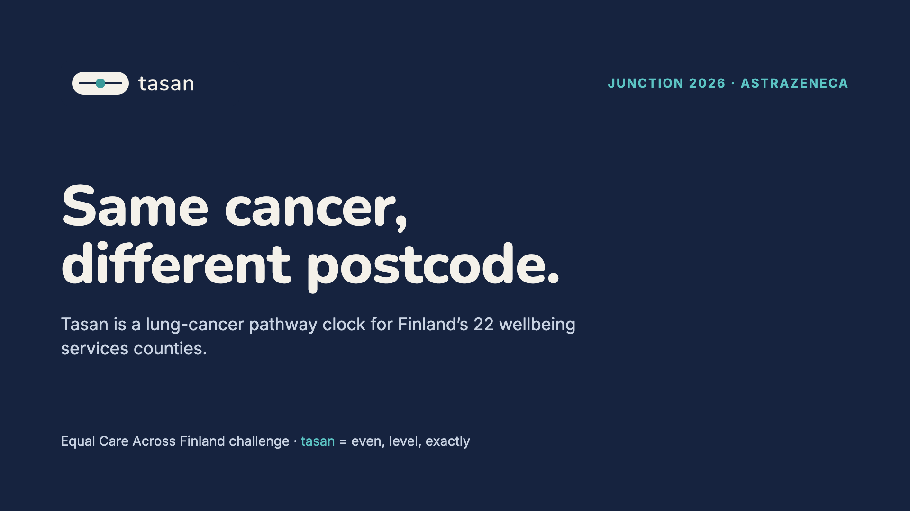
Scene 1 · 0:00–0:06 · 6 s
Cover: Same cancer, different postcode.
MotionFade in from navy. Title rises in, then the subtitle. Slow 3% push-in.
Voice(silent — title holds on screen)
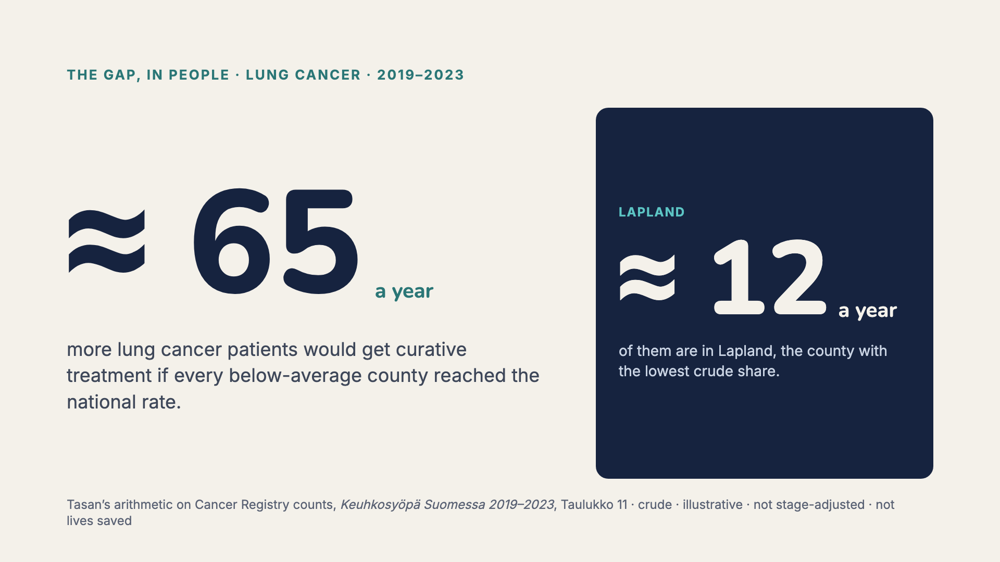
Scene 2 · 0:06–0:26 · 20 s
≈ 65 a year · Lapland ≈ 12
Motion“≈ 65” counts up from 0 over 1.5 s; the Lapland card slides in at 0:18.
Voice“Same cancer, different postcode. About 65 more lung cancer patients a year would get curative treatment if every below-average county reached the national rate. That’s Cancer Registry counts for 2019 to 2023. It’s illustrative, and it isn’t stage-adjusted. About 12 of them a year are in Lapland.”
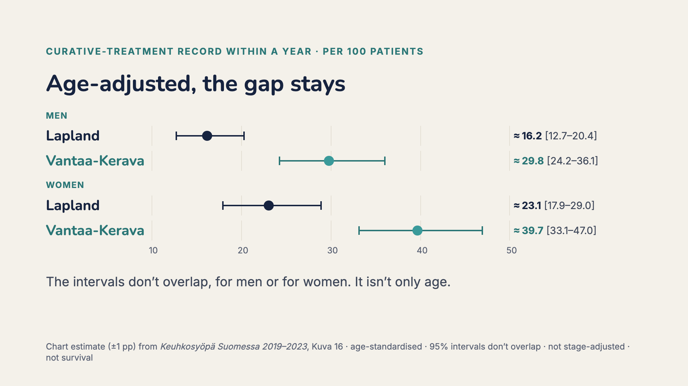
Scene 3 · 0:26–0:46 · 20 s
Age-adjusted, the gap stays
MotionInterval rows draw in one by one (men, then women).
Voice“And it isn’t just age. Age-adjusted, about 16 in 100 men with lung cancer in Lapland have a curative-treatment record within a year, against about 30 in 100 in Vantaa-Kerava. That’s a chart estimate from the 2026 Cancer Registry report. The intervals don’t overlap. Women show the same gap. It’s not survival.”
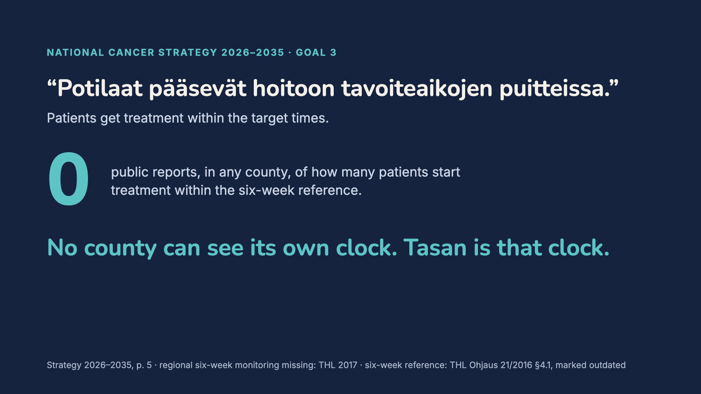
Scene 4 · 0:46–1:00 · 14 s
Goal 3: the missing clock
MotionQuote fades in; “0” lands at 0:52; last line in teal at 0:56.
Voice“Goal 3 of Finland’s cancer strategy says patients must start treatment within the target times. Today no county can see that clock for its own patients. Tasan is that clock.”
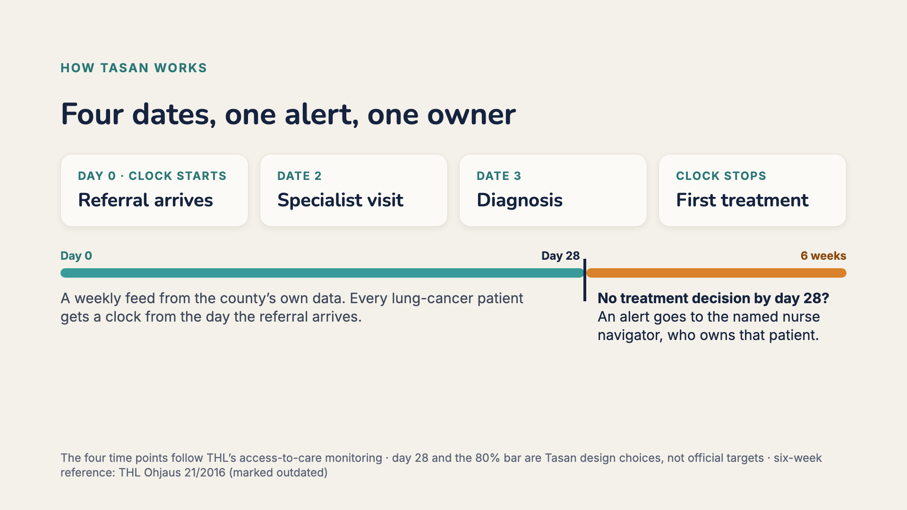
Scene 5 · 1:00–1:12 · 12 s
Four dates, one alert, one owner
MotionThe bar fills left to right like a clock; at day 28 it turns amber and the alert text appears.
Voice“Every lung patient’s clock starts when the referral arrives. On day 28 with no treatment decision, the nurse navigator gets an alert and owns that patient.”
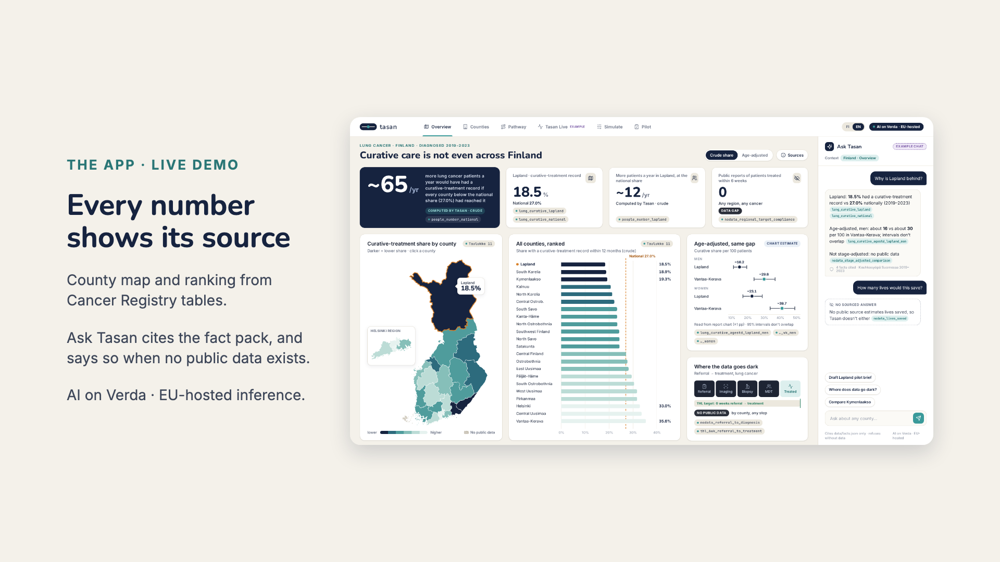
Scene 6 · 1:12–1:24 · 12 s
The app: every number shows its source
MotionPush in from full slide to the map and the “No sourced answer” card.
Voice“Every number in Tasan shows its source. Ask it something nobody in Finland can answer, and it says so. That missing number is the pilot.”
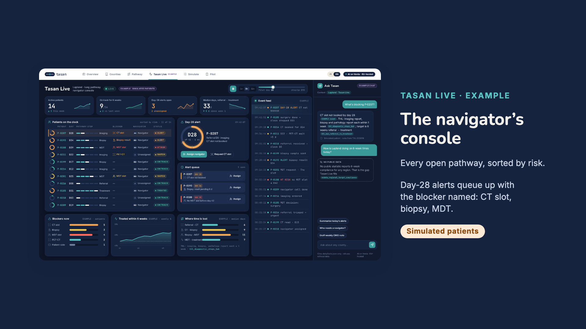
Scene 7 · 1:24–1:36 · 12 s
Tasan Live: the navigator’s console
MotionPush in to the D28 alert card. “Simulated patients” label stays on screen.
Voice“This is what the navigator sees: every open pathway, sorted by risk, with the blocker named. These patients are simulated.”
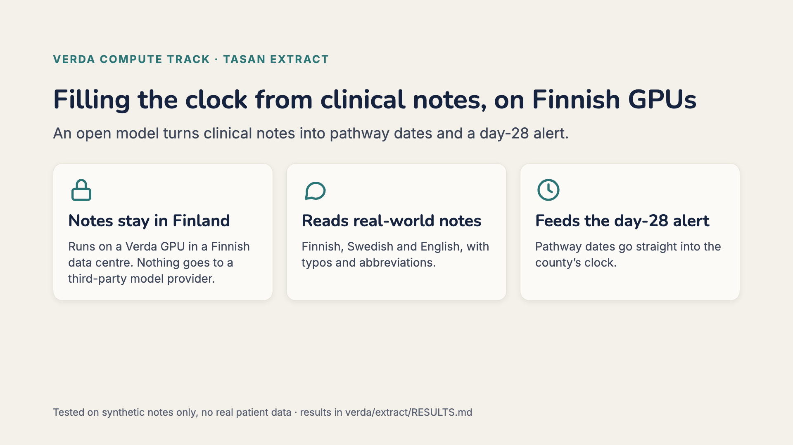
Scene 8 · 1:36–1:48 · 12 s
Tasan Extract on Finnish GPUs
MotionThe three cards rise in turn.
Voice“To fill the clock from clinical notes, we ran an open model on a Verda GPU in Finland. The notes never leave the country, and the dates go straight into the clock.”
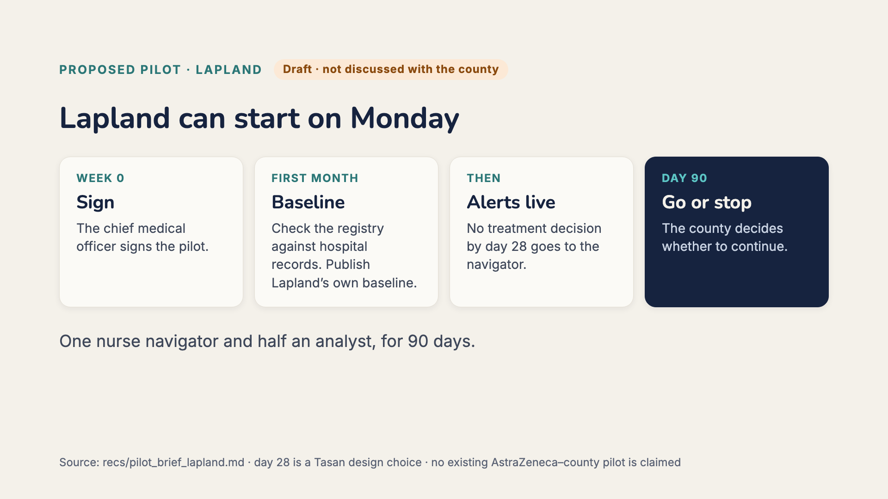
Scene 9 · 1:48–2:16 · 28 s
Lapland can start on Monday
MotionTimeline cards appear in step with the voice; team line last.
Voice“Lapland can start on Monday. The chief medical officer signs a 90-day pilot: one nurse navigator and half an analyst. In the first month we measure Lapland’s own baseline and check the registry against the hospital’s records. After that, every patient with no treatment decision by day 28 goes to the navigator. On day 90 the county decides go or stop.”
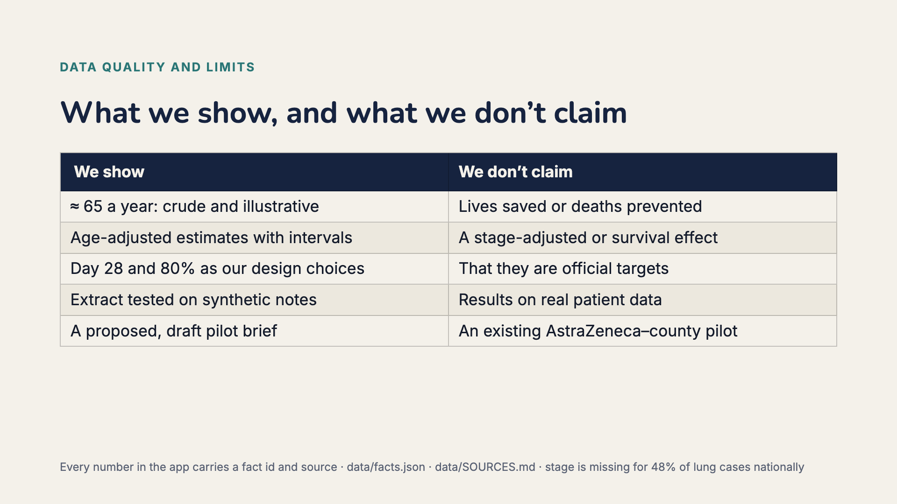
Scene 10 · 2:16–2:24 · 8 s
What we don’t claim
MotionTable rows reveal top to bottom. Held long enough to read.
Voice(silent — on-screen only)
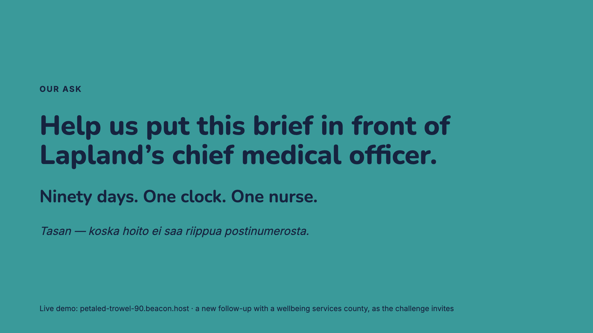
Scene 11 · 2:24–2:44 · 20 s
The ask
MotionTeal wipe in; lines appear with the voice; ends on the logo and demo URL for 3 s.
Voice“Your challenge asks for a follow-up with a Finnish wellbeing services county. Our ask: help us put this brief in front of Lapland’s chief medical officer. Ninety days, one clock, one nurse. Tasan, koska hoito ei saa riippua postinumerosta.”